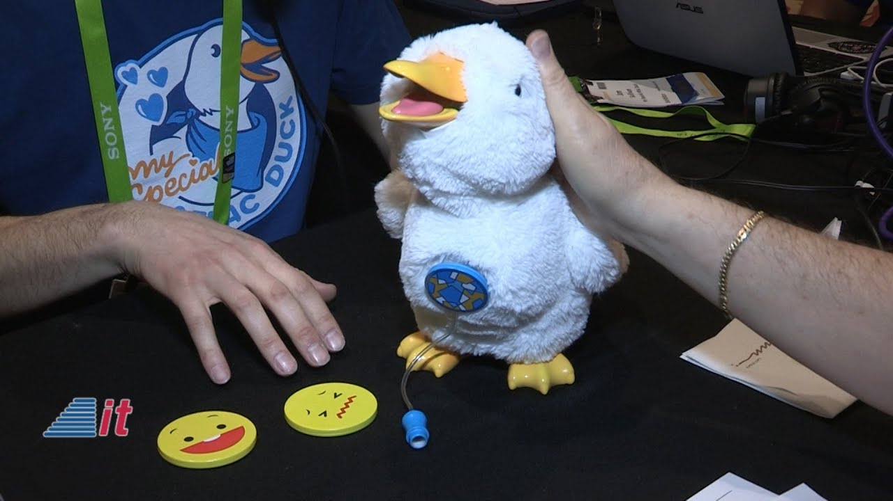

A Empresa Aflac projetou um pato-robô educativo e terapêutico, com recursos que podem ajudar especificamente crianças diagnosticadas com câncer a se expressarem melhor.
Uma das funções do Patinho é acalmar as crianças através de exercícios de respiração utilizando sons suaves como o de chuva.
